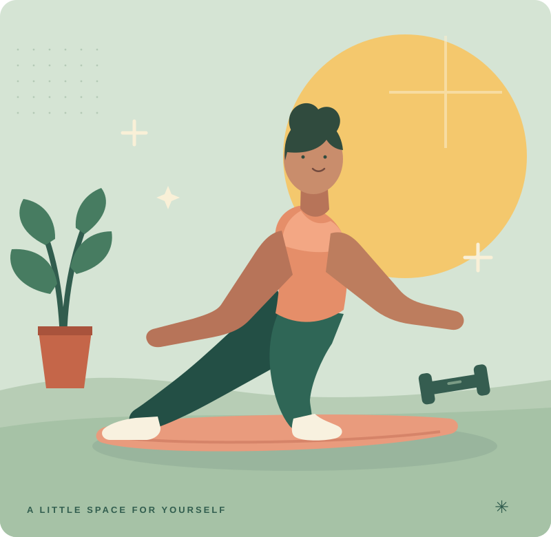

Three strength days
Simple full-body sessions, with rest between them. Begin with a level that feels manageable.
A little stronger, a little more confident, one week at a time. A free, flexible home fitness plan for real life.

Forget all-or-nothing. This plan brings strength, gentle cardio and mobility together in a routine you can make your own.
Simple full-body sessions, with rest between them. Begin with a level that feels manageable.
Add conversational-pace cycling, walking and gentle mobility around your strength work.
Follow four thoughtful phases over 52 weeks. Repeat, adapt or take a rest whenever you need.
Pick a week, explore the sessions and tick off movements as you go. There is no perfect week to keep up with.
First, a little care. This is general fitness information, not a medical assessment. If you have health concerns or have been inactive for a long time, check with a GP or accredited exercise professional before starting. Read the safety notes ↗
Tap a strength day below to explore it.
Need to move a session? Set a date inside its card. Leave recovery time between challenging strength days.
Warm up with 5 minutes of easy movement. Rest 60–120 seconds between challenging sets.
✳ Finish with 5–10 minutes of comfortable mobility. The movements below are a good place to start.
Easy cycling and walking complement strength work. Start at a pace where you can speak in sentences; incline is always optional.
Machine resistance levels are specific to your bike and cannot be compared between machines. Use a stable stride; lower the treadmill speed or incline if you need the rails for support.
Use these gentle movements after a workout or on a recovery day. Stay in a comfortable range and never force a stretch.
When a movement feels controlled at the top of its range, you can gradually change one thing: a little more resistance, a different variation or a slower lowering phase. Aim to finish most sets feeling you could do about 2–3 more good reps. Heavier resistance may eventually be needed for some strength goals.
Every fourth week and weeks 13, 26, 39 and 52 are easier or review weeks. Reduce the number of sets to around half, or 1–2 comfortable sets. Week 52 is a gentle review, not a maximum test.
Every effort counts. Your progress stays in this browser, on this device—not in an account or on our servers.
A JSON backup includes your sets, notes and dates. Restoring replaces the current browser data after confirmation. CSV is a readable export, not a restorable backup. Clearing browser data or changing devices can erase your progress; save a backup regularly.
There is no test here that can determine whether a workout is medically suitable for you. Adapt, repeat a week or skip a movement whenever you need to.
This plan is general information, not individual medical advice. If you are unsure, have an injury, a health condition, or have been inactive for a long time, speak with a GP or accredited exercise physiologist about an appropriate starting point.
Stop exercising for sharp or persistent pain, chest pain, faintness or unusual breathlessness. Seek appropriate medical help; chest pain, collapse or severe breathlessness can require emergency care.
Use a sturdy, non-slip chair or low step and clear floor space. Inspect bands for damage, secure them as instructed, keep them away from your face and do not anchor them to unstable furniture. Use a comfortable range; shoulder pressing is optional.
Crunches and planks train different functions, so the plan includes both dynamic and stability work. Ab exercises alone cannot selectively reduce belly fat. Individual results vary.
Everyday Strong is free to use. If you find it helpful, you can optionally support this and the creator's other free learning projects.
Support via Stripe (opens Stripe in a new tab)